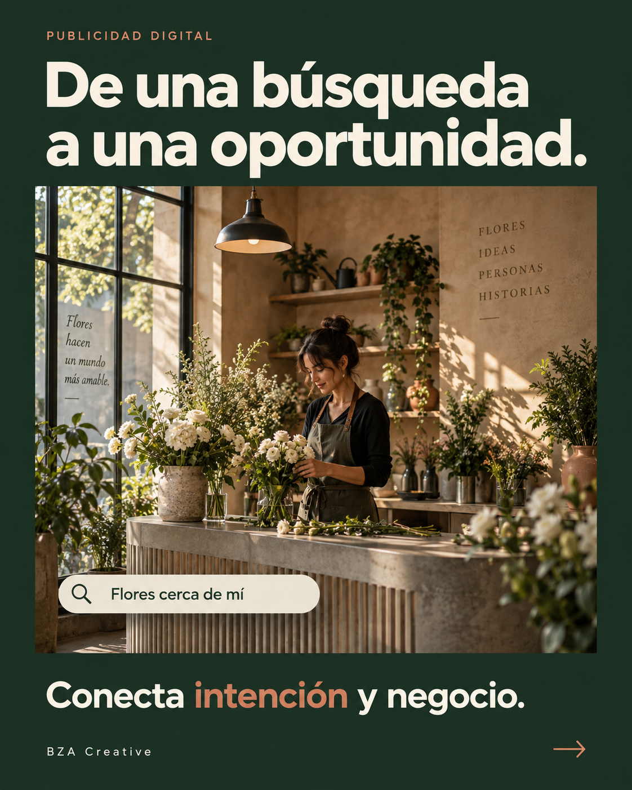

Captura la demanda existente.
Tu anuncio aparece cuando alguien en Guadalajara o Zapopan ya busca tu servicio. Elegimos palabras con intención comercial y excluimos búsquedas de empleo, cursos o cosas gratis.
BZA / AGENCIA DE PUBLICIDAD DIGITAL · GUADALAJARA
Planeamos y operamos campañas de Google Ads, Meta Ads (Facebook e Instagram) y TikTok Ads para negocios de Guadalajara y Zapopan. Empezamos con un canal, lo probamos cuatro semanas y decidimos por el costo por conversación calificada, no por clics ni “me gusta”.

EL PROBLEMA MÁS COMÚN
Es fácil gastar en anuncios sin saber qué funcionó: campañas que mandan tráfico a la página de inicio, audiencias demasiado amplias, mensajes de WhatsApp sin origen y reportes llenos de clics, alcance y “me gusta”. Sin una medición clara, cada peso se decide a ciegas.
CADA CANAL TIENE UN PAPEL
Como agencia de marketing digital en Guadalajara, elegimos el canal según cómo llega tu cliente a ti, no según la moda.
Tu anuncio aparece cuando alguien en Guadalajara o Zapopan ya busca tu servicio. Elegimos palabras con intención comercial y excluimos búsquedas de empleo, cursos o cosas gratis.
En Facebook e Instagram llevamos tu propuesta a personas que todavía no te buscan y hacemos retargeting a quienes ya visitaron tu sitio o interactuaron con tus redes.
Cuando tu oferta se entiende bien en video corto, adaptamos la idea al formato vertical de TikTok para llegar a personas de tu zona que todavía no conocen tu negocio.
CÓMO TRABAJAMOS
No repartimos un presupuesto pequeño entre muchos canales. Probamos uno bien y movemos el dinero según la evidencia.
Revisamos tu oferta, tu sitio y lo que ya inviertes. En menos de 24 horas recibes una propuesta con el canal recomendado.
Antes de pagar un solo clic, revisamos que cada anuncio lleve a una página clara del servicio, con botón de WhatsApp y medición listos.
Lanzamos un solo canal con un presupuesto de prueba y ajustamos anuncios, palabras clave y audiencias con lo que vemos.
Comparamos cuánto cuesta cada conversación calificada y movemos el presupuesto hacia lo que la genera más barata.
MEDICIÓN Y TRANSPARENCIA
Los clics y los “me gusta” sirven para diagnosticar. La métrica que decide es el costo por conversación calificada.
Todos los anuncios y publicaciones llevan parámetros UTM, así Google Analytics 4 registra de qué canal, campaña y anuncio llegó cada persona.
Los mensajes de WhatsApp que inician desde tu sitio incluyen su fuente, medio y campaña, para saber qué anuncio generó la conversación aunque falle la analítica.
Las cuentas de Google Ads, Meta y GA4 son de tu negocio. La inversión en anuncios la pagas directo a las plataformas y es independiente de nuestros honorarios.
¿PARA QUIÉN ES?
PREGUNTAS FRECUENTES
Hay dos conceptos separados. Nuestros honorarios por estrategia, configuración, creativos y gestión dependen del alcance y los cotizamos después del diagnóstico inicial, que no tiene costo. La inversión en anuncios la pagas directamente a Google, Meta o TikTok desde tu propia cuenta; en la propuesta te recomendamos un presupuesto de prueba según tu objetivo.
Depende de si tus clientes ya buscan lo que ofreces. Si lo buscan en Google, la red de búsqueda suele ser el primer paso porque captura esa demanda. Si tu servicio necesita darse a conocer, Facebook e Instagram ayudan a crear interés y a volver a impactar a quienes ya te visitaron. Lo definimos en el diagnóstico.
No prometemos ventas ni plazos garantizados. Lo que sí hacemos es una prueba de cuatro semanas con un canal: en ese periodo reunimos datos de búsquedas, clics y conversaciones para decidir si conviene ajustar, mantener o cambiar de canal.
Sí. Las cuentas de Google Ads, Meta, Google Analytics y tu dominio quedan a nombre de tu negocio. Trabajamos con el acceso que nos otorgas y, si dejamos de colaborar, las cuentas y su historial siguen siendo tuyos.
Recomendamos que cada anuncio lleve a una página específica de tu servicio, no a la portada ni a un perfil genérico. Si no la tienes, la diseñamos primero; si ya tienes sitio, revisamos que la página de destino cuente la misma historia que el anuncio.
Sí. Atendemos Guadalajara y Zapopan y manejamos campañas para negocios de cualquier parte de México, segmentadas a la zona donde están tus clientes.
DIAGNÓSTICO INICIAL SIN COSTO
Cuéntanos por WhatsApp qué ofreces, dónde están tus clientes y qué has probado. Después del diagnóstico recibes una propuesta en menos de 24 horas.